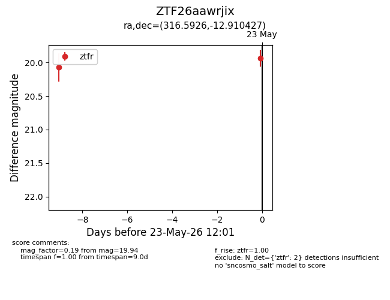
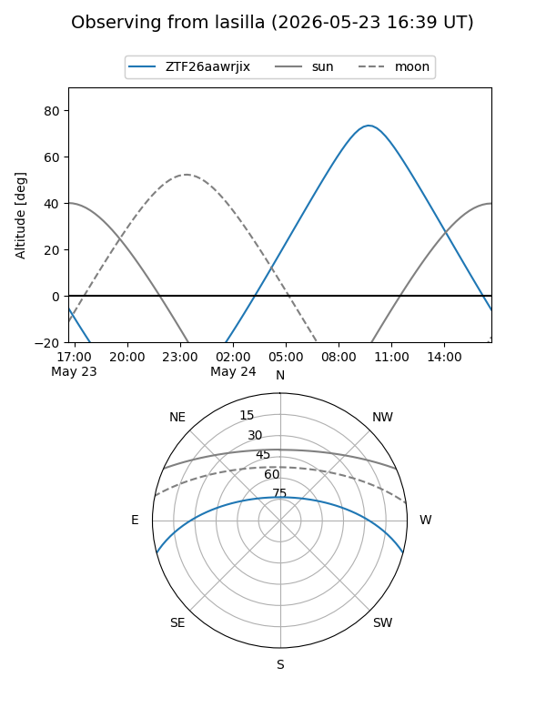
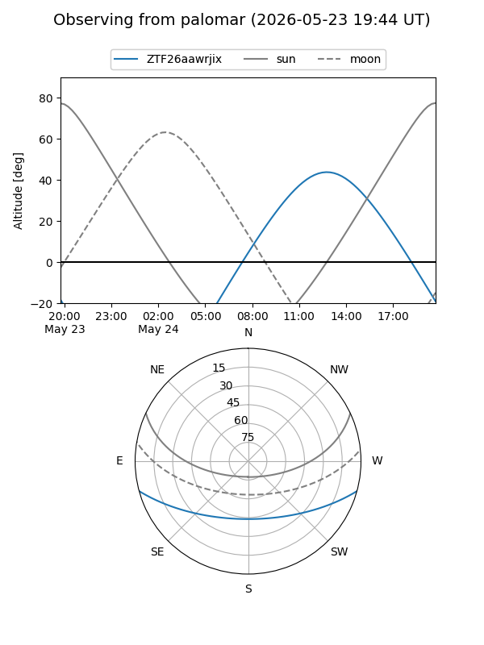
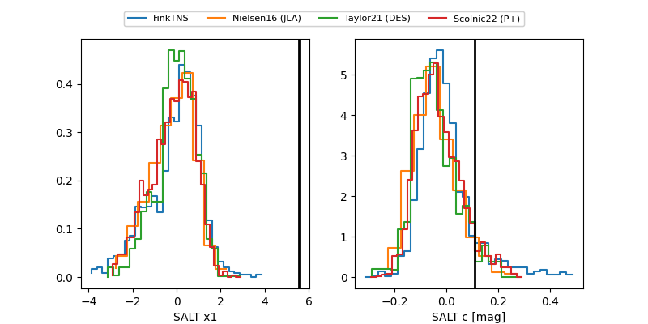

ZTF26aawrjix
Target ZTF26aawrjix at 2026-05-23 12:03
Aliases and brokers:
lsst-FINK: link
lsst-Lasair: link
lsst-ALeRCE: link
ztf-FINK: link
ztf-Lasair: link
ztf-ALeRCE: link
alt names
ZTF26aawrjix (ztf,fink_ztf)
Coordinates:
equatorial (ra, dec) = 316.5926,-12.91043
equatorial (HMS+DMS) = 21:06:22.22,-12:54:37.54
galactic (l, b) = (36.3186,-35.70543)
Flags:
Photometry:
last ztfr=19.94
2 ztfr detections
Lightcurve

Visibility


Additional plots
